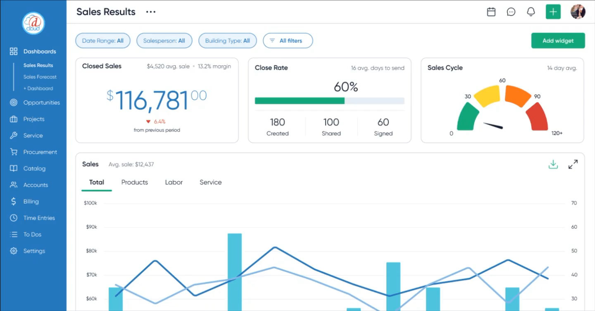

Custom Dashboards & AI Summaries
The default dashboard saw little use because a generic one-size-fits-all view didn't answer anyone's morning questions. I rebuilt the feature around role-based starter templates with grounded AI summaries, driving 62% multi-dashboard adoption and a 71% increase in sustained views.
At a glance
- The Problem: The default dashboard saw little use. Sales, service, and operations all dumped raw data into their own Monday morning spreadsheets instead. Meanwhile, leadership was pushing for a conversational AI interface that users weren't ready to trust.
- What I Built: Role-based starter templates that teams could customize, rearrange, and save. We kept AI tightly scoped to summarizing visible numbers on the screen rather than trying to replace dashboards with open-ended chat.
- The Result: 62% of active users built and saved multiple custom dashboards for distinct workflows, replacing manual spreadsheet exports and driving a 71% increase in sustained dashboard views.
Problem
D-Tools had a single static dashboard that tried to serve sales, operations, and service teams with the exact same widgets. Because it didn't match anyone's actual daily routine, people barely looked at it. Managers just exported raw data into Excel every Monday morning and built their own charts. At the same time, leadership was excited about an AI-first interface where people would ask questions in a chat box. The real challenge was figuring out how to give teams useful day-to-day tools while introducing AI in a way that felt practical, not gimmicky.
Objectives
- Give teams starter templates matching their specific role so they stop exporting to Excel
- Let users rearrange widgets, resize cards, and save multiple views for different routines
- Keep AI summaries strictly tied to visible numbers on the screen so users can verify every claim
Research Insights
To understand why teams abandoned existing analytics, I led 10 semi-structured discovery interviews: 6 with active power users (integrator ops managers, project leads, and accounting controllers) and 4 with internal stakeholders across sales engineering and customer success.
Research Findings
-
Finding 1
Core insight: Users either ignored dashboards entirely or exported raw numbers into Monday Excel sheets.
-
Finding 2
Workflow friction: Operators needed fast routines: customizing a morning view couldn't feel like building a report from scratch.
-
Finding 3
Sales constraint: Sales reps needed immediate visual punch for live demos to win enterprise clients.
Design Decisions
-
Decision 1
Role-based templates: Replaced static layouts with starter templates matching specific daily routines.
-
Decision 2
Fast card manipulation: Drag-and-drop rearrangement and 1-click AI summaries from active widgets.
-
Decision 3
Demo-ready views: Pre-populated executive layouts that sales could pull up instantly during discovery calls.
Design Approach & Decisions
-
Scope the feature
I focused the release around role-based templates that helped users start quickly without locking them into rigid layouts. Users could start from a template, build from a blank dashboard, add widgets, rearrange sections, and choose visualization styles.
The goal was to make dashboards flexible enough to replace spreadsheet exports without forcing every team into the same view.
-
Build trust with data
We kept AI strictly tied to verifiable numbers on the screen. The model wasn't allowed to draw speculative conclusions; it could only summarize the visible data on the active dashboard. To reduce unsupported answers and keep users confident in the numbers, I worked with engineering to constrain the LLM context window exclusively to the JSON payload of the user's active widgets.

Defining Decision: Dashboards Before AI
Internally, the initial push was to bypass dashboards entirely and build an AI prompt box. But during user sessions, people froze in front of the blank input. Integrators don't think in open-ended prompts; they want to glance at a screen and immediately spot red flags or overdue shipments. Without visual reference points, an AI assistant felt untrustworthy. Once managers could see their numbers, an AI summary that highlighted week-over-week anomalies actually saved them time.
Interviews backed that up, so we landed on a clear split:
- Dashboards: show current status, surface anomalies, and give operators an anchor
- AI summaries: pull out key highlights and generate quick updates for stakeholders
The Operational Anchor: Field managers glance at verified numbers at 7:00 AM without having to formulate an open prompt.
"Morning dispatch brief: There are 14 open tickets, including 3 escalations. All 8 deliveries are on schedule. Gross margin is 31.4% and is trending down week over week."
The Synthesis Layer: Summaries are limited to the active dashboard data so users can compare them with the source numbers.
Execution Constraints: Managing Without a Design System
Because I was leading both product definition and design delivery, keeping scope under control was non-negotiable. We also didn't have a shared design system yet. That came directly after this project, when I built and rolled out our 100+ component library across D-Tools Cloud.
Front-end alignment: Standardized widget constraints
Back then, we were working with basic UI kit variants and loose guidelines. That meant I had to sit closely with our front-end engineers every week. Instead of inventing unique card styles or fancy animations, I stuck to a few consistent widget wrappers and standard grid increments. It kept code clean and prevented the dashboard from breaking when users resized their screens.
Systems architecture: Role-based access (RBAC) & 400ms cached payloads
Beyond UI consistency, our primary systems challenge was role-based access control (RBAC) across four backend engineers. Field technicians and project managers required immediate operational visibility into active jobs, but executive widgets exposing company-wide gross margins and pipeline valuations could not leak across unauthorized roles. I mapped widget permissions directly to existing workspace roles, while engineering cached aggregated card payloads in JSON to keep multi-widget dashboards rendering under 400 milliseconds.
Prototyping & Validation
Usability testing: 5-user workflow validation
I prototyped the full flow in Figma and tested it with five target users, walking them through picking a template, rearranging cards, and generating a report.
Iteration: more data density, more control
Our early prototypes were pretty minimal, but users immediately asked for more data density. They wanted quick-hit KPI counters for the numbers they check every single morning, and they wanted to drag those cards right to the top of the page. Adding that level of customization stretched our timeline a bit, but it made the difference between something operators would actually leave open on a second monitor and another tool they'd ignore.
- 4/5 users said templates matched how they think about their work
- All 5 participants customized and saved a new dashboard without prompting
These sessions gave us the confidence to cut complex formula widgets from the initial release and focus solely on template flexibility.
Impact
62% of active users created and saved multiple custom dashboards for distinct workflows. Moving managers off external spreadsheets drove a 71% increase in sustained platform views, and sales began using the customizable views in live demos.
Rather than relying on short-term launch spikes, we measured adoption depth: 62% of users actively configured multiple saved dashboards (such as a morning dispatch view alongside a monthly margin tracker), sustaining high engagement over time.
Users reached an average of two customizations per chart, showing they were actively tailoring widgets to answer specific questions about their projects.
Feature telemetry also revealed a clear rhythm in how teams used the AI: deterministic charts and widget filters served as the daily operational anchor for dispatch and pipeline checks, whereas 1-click AI summaries found their strongest rhythm during monthly executive reporting cycles, with a marked surge at the end of each fiscal quarter when department leads compiled board decks and revenue reviews.

Lesson
It’s easy to get swept up in technology trends, especially when executive teams are excited to ship something with "AI" on the landing page. But our user research gave us clear cover to push back. Integrators didn't want a chatbot; they wanted to know if their morning deliveries were late and whether their service jobs were profitable. By treating AI as a tool that summarizes visible chart data rather than an all-knowing chat assistant, we built something operators could actually trust and use every day.
Next Steps
The dashboards are now a released product feature. The main lesson was to give people useful dashboards first, then add AI where it helped them interpret the numbers. I would carry that approach into future reporting work rather than start with an open-ended prompt box.
Inventory, Purchasing & Receiving
Redesigning end-to-end stock tracking and receiving workflows to unblock enterprise pilot contracts and scale warehouse operations.